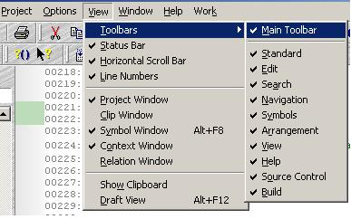
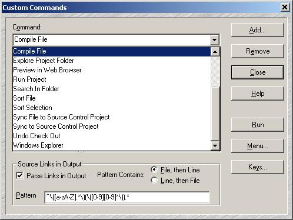
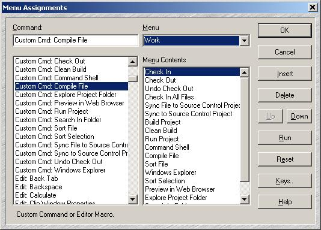
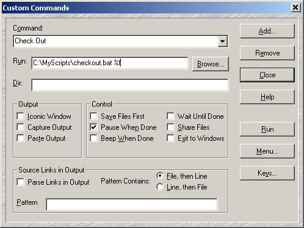

在SourceInsight中集成版本管理工具
SourceInsight是一个功能强大的源码阅读和编辑工具，它也支持用户自定义的命令。我们可以选取主菜单中的“View”->“Toolbars”中的“Source Control”和“Build”以便显示版本管理和构建工具栏。

这两个工具栏所对应的命令都是可以定制的，更多的定制命令可以在“Options”->“Custom Commands...”中看到和修改：

点击其中的“Menu...”按钮还可以将常用的自定义命令放到菜单中，例如我将常用的命令放到了“Help”后的“Work”菜单中：

SourceInsight默认集成的版本管理工具是VSS，当然我们也可以进行更多的修改。《在SourceInsight中集成Visual SourceSafe》中有详细的介绍。在按下Ctrl键后点击工具栏或菜单上的项目时都可以快速打开自定义命令的设置窗口，更多的使用方法请参考联机帮助或在线文档。为了集成Hansky Firefly，我们需要修改“Custom Commands”对话框中的“Run：”文本。“Dir:”默认的就是SourceInsight项目的主目录，而Firefly的脚本的工作目录必须为Firefly本地工作区所在的目录。我们将项目的主目录设置为Firefly本地工作区所在的目录，就可以避免修改“Dir:”的设置了。

上面写的是“C:\MyScripts\checkout.bat %f”。其中checkou.bat是我们需要编写的批处理文件，“%f”是SourceInsight支持的命令扩展，它会自动替换为当前编辑文件的完整路径（带文件名）。checkout.bat的内容非常简单：
@echo off
hff edit %1
类似的，“Check In”对应的“Run”语句为：C:\MyScripts\checkin.bat %f。
“Undo Checkout”对应的“Run”语句为：C:\MyScripts\unedit.bat %f。
“Sync to Source Control Project”对应的“Run”语句为：C:\MyScripts\bringover.bat。
“Sync File to Source Control Project”对应的“Run”语句为：C:\MyScripts\bringover.bat %f。
当然了，Hansky Firefly特有的一些功能也可以通过增加新的命令还完成，例如：
下面是这些脚本的内容：
|
脚本文件
|
脚本内容
|
| create.bat | @echo off hff create -e %1 |
| checkin.bat | @echo off hff putback %1 |
| checkout.bat | @echo off hff edit %1 |
| bringover.bat | @echo off hff bringover %1 |
| unedit.bat | @echo off hff unedit %1 |
| checkinall.bat | @echo off hff putback %1 |
需要特别注意的是，脚本中引用hff（其实是hff.bat）时没有加全路径。这些脚本的正常运行需要将Hansky Firefly的安装路径（例如：C:\Program Files\hansky\firefly\client\bin\java）加入到PATH环境变量中。Hansky Firefly的命令行还可以完成很多其他的操作，可以查看hff.bat输出的信息或Hansky的联机帮助获得更多的信息。